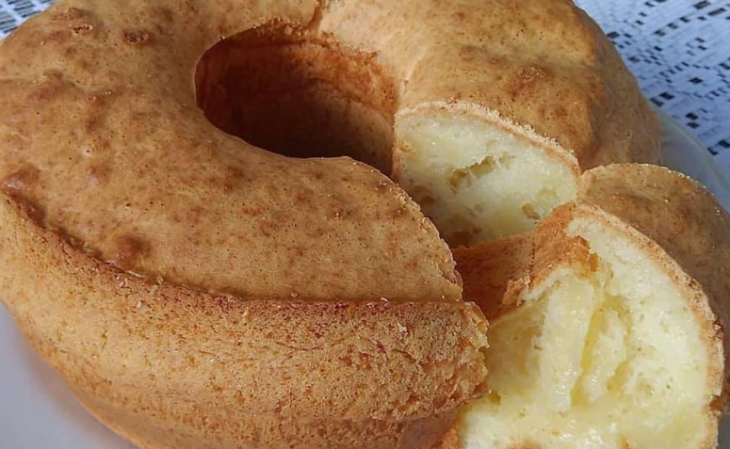

Bolo de Queijo

Descrição
Ótimo para o café da manhã ou da tarde, essa receita que mistura o bolo e o pão de queijo é simplesmente imperdível!
Veja como é simples o seu preparo.
Ingredientes
- 3 ovos inteiros
- 3 xícaras (chá) de polvilho doce
- 1 xícara (chá) de leite
- 1 xícara (chá) de óleo
- 1 colher (café) de sal
- 150g de parmesão ralado
- 1 colher (sopa) de fermento em pó
Modo de Preparo
- Preaqueça o forno em 180ºC por 20 minutos e unte com óleo uma forma redonda com fundo central
- Bata no liquificador os ovos, o leite e o óleo
- Em uma vasilha, misture aos poucos o polvilho, o queijo, e a mistura do liquificador
- Por último, adicione o fermento e mexa delicadamente por alguns segundos
- Despeje a massa na forma e leve ao forno por 30 minutos